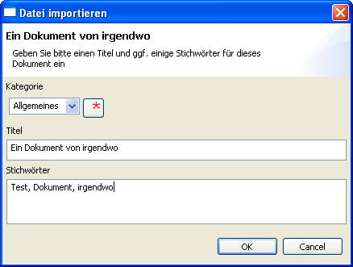
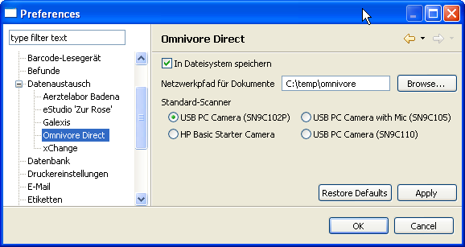

Ch.elexis.omnivoredirect.feature.feature.group
Contents
- 1 Einführung
- 2 Voraussetzungen
- 3 Installation
- 4 Dokumente Einlesen
- 5 Drag&Drop
- 6 Dateiauswahldialog
- 7 Direktes Scannen
- 8 Eintragen eines neuen Dokuments
- 9 Arbeiten mit Dokumenten
- 10 Änderung der Dokumentdetails
- 11 Ansehen eines Dokuments
- 12 Änderung eines Dokuments
- 13 Exportieren eines Dokuments
- 14 Konfiguration
- 15 Speichermethoden Datenbank vs. Dateisystem
- 16 Standard-Scanner
- 17 Tips für Scanner Einstellungen
- 18 Nutzungsbedingungen und Haftungsausschluss
- 19 Konfiguration
- 20 Einführung
- 21 Funktionen
- 22 ev andere Untertitel
Einführung
- Wichtig: * Beachten Sie bitte vor der Installation oder Verwendung dieses Plugins die Nutzungsbedingungen in Abschnitt [bedingungen] auf S. .
Omnivore direct dient dazu, beliebige Dokumente und Dateien einem Patienten zuzuordnen. Omnivore direct ist eine Weiterentwicklung des Omnivore-Plugins mit folgenden Verbesserungen:
- Ein angeschlossener Scanner kann direkt von Omnivore aus gestartet werden (Daher der Name ‘Omnivore direct’). Es können so auch mehrseitige Dokumenten eingescannt werden.
- Dokumente können in Kategorien eingeteilt werden.
- Dokumente können auch ausserhalb der Datenbank gespeichert werden und können dann beliebig gross sein.
- Dokumente können auch exportiert werden.
Omnivore direct ist rückwärtskompatibel zu Omnivore. Alle bereits vorhandenen Dokumente werden automatisch übernommen.
Voraussetzungen
Omnivore direct funktioniert leider bisher nur unter Windows und nur mit TWAIN-Kompatiblen Scannern1.
Installation
[fig:omnivoredirectview]
Kopieren Sie das Plugin wie gewohnt in Ihr Plugins-Verzeichnis von Elexis. Sie finden dann eine View ‘Omnivore’ in Ihrer View-Sammlung (S. Abb. [fig:omnivoredirectview]). Beim ersten Aufruf dieser View kann längere Zeit scheinbar nichts passieren, falls Sie schon viele Dokumente mit Omnivore erfasst hatten – die Datenbank wird reorganisiert, was bei grossen Datenmengen einige Zeit dauern kann. Bitte haben Sie Geduld (bis zu einer halben Stunde oder mehr). Falls Sie Elexis während dieser Reorganisation abbrechen, geht zwar nichts kaputt, aber es wird beim nächsten Start wieder von vorne begonnen.
Dokumente Einlesen
Um ein Dokument einem Patienten zuordnen zu können, muss zunächst ein Patient ausgewählt und dann das Dokument eingelesen werden. Dokumente können entweder mit Drag&Drop oder über einen Dateiauswahldialog oder mit dem Scanner nach Omnivore direct eingelesen werden.
Drag&Drop
Nehmen Sie eine Datei mit der Maus aus dem Explorer und ziehen Sie sie auf das Omnivore direct – Fenster. Danach erscheint der Dialog zum Eintragen eines neuen Dokuments. (s. Abb. [fig:eintragen])
Dateiauswahldialog
Klicken Sie auf den Import-Button in der Omnivore direct View. Es öffnet sich eine Dateiauswahldialogbox. Wählen Sie die gewünschte Datei aus. Danach erscheint der Dialog zum Eintragen eines neuen Dokuments. (s. Abb. [fig:eintragen])
Direktes Scannen
Falls Sie unter Einstellungen noch keinen Standardscanner definiert haben, müssen Sie zunächst im View-Menü unter ‘Datenquellen’ das gewünschte Eingabegerät auswählen2. Klicken Sie dann auf das Scanner-Icon um den Scanvorgang zu starten. Wenn die Seite fertig eingelesen ist, erscheint eine Dialogbox mit der Frage, ob noch weitere Seiten zu diesem Dokument gehören. Wenn ja, dann legen Sie erst die nächste Seite in den Scanner und klicken dann Ja. Wenn keine Seite mehr dazugehört, klicken Sie Nein. Omnivore direct erstellt dann aus den eingescannten Seiten eine PDF-Datei. Danach erscheint der Dialog zum Eintragen eines neuen Dokuments. (s. Abb. [fig:eintragen])
Eintragen eines neuen Dokuments
Egal auf welchem Weg Sie ein Dokument eingelesen haben, Sie werden auf jeden Fall anschliessend aufgefordert, das Dokument näher zu bezeichnen und zu kategorisieren:

[fig:eintragen]
Die Combobox oben erlaubt Ihnen, das Dokument einer bestimmten Kategorie zuzuordnen. Diese Kategorien können Sie selber erstellen; klicken Sie dazu einfach auf den roten Stern und geben Sie den Namen der neuen Kategorie ein. Darunter können Sie einen Titel für das Dokument eintragen. Bei Dateien steht hier zunächst der Dateiname, bei gescannten Bildern nur ‘gescanntes Dokument’. Geben Sie also einen aussagekräftigeren Titel ein. Im untersten Feld können Sie einige Stichwörter zum Dokument eintragen, damit Sie es leichter wiederfinden.
Arbeiten mit Dokumenten
Änderung der Dokumentdetails
Wenn Sie in der Omnivore-View mit der rechten Maustaste auf ein Dokument klicken, und ‘Bearbeiten’ wählen, gelangen Sie wieder zur Dialogbox wie in Abb. [fig:eintragen]. Sie können hier das Dokument einer anderen Kategorie zuordnen oder Titel oder Stichwörter ändern.
Ansehen eines Dokuments
Wenn Sie auf ein Dokument doppelklicken, wird es mit der dafür vorgesehenen Standardanwendung geöffnet (ausserhalb von Elexis). Falls auf Ihrem Computer keine Anwendung vorhanden ist, die den betreffenden Dateityp lesen kann, kann nichts angezeigt werden.
Änderung eines Dokuments
Das nachträgliche Manipulieren von einmal eingelesenen Dokumenten ist bewusst nicht so einfach möglich. Man kann ein Dokument allenfalls löschen und wieder neu einlesen.
Exportieren eines Dokuments
Wenn Sie ein Dokument für eine andere Anwendung oder für den Versand bereitstellen möchten, können Sie es als Datei exportieren. Klicken Sie dazu einfach den Export-Button und wählen Sie einen Dateinamen.
Konfiguration
Unter Datei-Einstellungen-Datenaustausch-Omnivore direct finden Sie eine Einstellungsseite für Omnivore direct (Abb. [fig:omnivore2]).

[fig:omnivore2]
Sie können hier einstellen, ob die Dokumente standardmässig in der Datenbank oder in einem Ordner im Dateisystem gespeichert werden sollen. Diese Einstellung will gut überlegt sein. Die OpenSource-Omnivore Version speichert grundsätzlich in der Datenbank, aus gute Gründen:
Speichermethoden Datenbank vs. Dateisystem
Speichern in der Datenbank: Vorteile
- Die Daten sind immer von allen Stationen erreichbar, die sich mit der Elexis-Datenbank verbinden können. Man braucht sich nicht um Netzwerk-Freigaben zu kümmern und nach einem Computerabsturz wird alles sofort wieder funktionieren.
- Die Daten werden automatisch mit dem Elexis-Backup gesichert. Man braucht sich keine gesonderten Gedanken darum zu machen und kann nichts aus Versehen vergessen.
- Die Datenbank kann leicht mit allen Daten auf einen anderen PC übertragen werden.
Speichern in der Datenbank: Nachteile
- Grosse Dokumente blähen die Datenbank gewaltig auf und können auch die Zugriffsgeschwindigkeit verlangsamen.
- Eine SQL-Datenbank ist nicht für das Handling grosser Objekte optimiert.
- Die Dateigrösse kann an datenbankspezifische Limits stossen.
Speichern im Dateisystem: Vorteile
- Die Dateien bleiben in einer Form, die auch von anderen Programmen gelesen werden kann – sie bleiben auch unabhängig von Elexis zugänglich.
- Das Dateisystem ist für das Handling von grossen Objekten optimiert und hierin einer Datenbank überlegen.
- Die Dateigrösse ist nur von Dateisystem-Limits begrenzt. Das sind 4GB bei FAT32-Dateien und gar kein praktisches Limit bei NTFS- und Ext3-Dateien.
Speichern im Dateisystem: Nachteile
- Die Dateien sind nicht ‘automatisch’ von jedem Client aus erreichbar – die entsprechenden Ressourcen müssen auf dem Server explizit freigegeben und auf jedem Client separat eingebunden werden – bei jedem Neu Einrichten aufs Neue. Wenn man dabei Fehler macht kann es passieren, dass man parallele ‘Welten’ von Dokumentspeicherorten erhält, die einander nicht sehen. Man meint dann jeweils, manche Dokumente seien weg. Es gibt Inkonsistenzen zwischen Datenbank und externen Dateien.
- Man muss daran denken, beim Backup oder beim Transfer auf einen Reserve-Server auch die externen Speicherorte zu speichern und am selben Ort einzubinden.
- Man macht sich weniger Gedanken über sinnvolle Scaneinstellungen und lädt unnötig riesige Dateien, die dann bei jedem Öffnen die gesamte Netzwerkbandbreite für mehrere Sekunden blockieren.
Standard-Scanner
Im unteren Teil des Einstellungs-Dialogs können Sie angeben. welches TWAIN-Gerät in erster Linie verwendet werden soll. Dieses Gerät wird dann jeweils in der View als Vorgabe genommen.
Tips für Scanner Einstellungen
- Zwar ist die Dateigrösse bei heutigen Festplatten kaum noch ein Thema, aber grosse Dateien brauchen nicht nur Platz, sondern auch Bandbreite, wenn sie übers Netzwerk transortiert werden sowie Rechenzeit, wenn sie zur Anzeige aufbereitet werden. Es lohnt sich also, sich Gedanken über sinnvolle Scanner-Einstellungen zu machen.
- Bedenken Sie: Der Bildschirm kann normalerweise etwa 100 dpi (dots per inch) auflösen. Ein gedrucktes Dokument sieht mit 300 dpi einwandfrei aus. Faxe werden mit 200 dpi oder 400 dpi (‘superfein’) aufgelöst. Mit anderen Worten: Es macht keinen Sinn, Dokumente mit 1200 dpi zu scannen. EIn Dokument mit 1200 dpi ist 16 Mal so gross wie dasselbe Dokument mit 300 dpi und enthält idR keinerlei weiteren Informationen.
- Eine Schwarzweissvorlage braucht nicht mit 32 Bit Farbtiefe gescannt zu werden. Allerdings auch nicht mit 2 Bit (schwarz/weiss), da dies meist zu schlechter Qualität führt. Ein guter Kompromiss sind 16 Graustufen.
Nutzungsbedingungen und Haftungsausschluss
[bedingungen] Sie dürfen Omnivore direct nur verwenden, wenn Sie folgenden Bedingungen vollumfänglich zustimmen:
- Sie erhalten mit dem Kauf einer Lizenz das nicht-exklusive Recht Omnivore direct auf allen mit einem gemeinsamen Elexis-Server verbundenen Computern zu installieren und zu benutzen, egal wieviele das sind. Für die Installation auf mehreren Serversystemen benötigen Sie mehrere Lizenzen.
- Die Lizenz darf nur dann an Dritte weiterveräussert werden, wenn sämtliche Exemplare gelöscht oder dem neuen Besitzer übergeben werden.
- Die Verwendung erfolgt auf eigene Gefahr. Für direkte und indirekte Schäden, die aus der Verwendung oder Nichtverwendbarkeit von Omnivore direct entstehen, wird jede Haftung abgelehnt.
- Falls Omnivore direct auf Ihrem Computersystem nicht zufriedenstellend funktioniert, können Sie es innert 4 Wochen gegen volle Rückerstattung des Kaufpreises zurückgeben. Sie verpflichten sich in diesem Fall, sämtliche in Ihrem Besitz befindlichen Kopien zu vernichten.
Omnivore direct und diese Dokumentation sind 2008 by G. Weirich. Alle Rechte vorbehalten. 1 Es gibt unter Windows zwei Systeme, um Scanner anzubinden: TWAIN (Toolkit Without An Interesting Name) und WIA (Windows Image Acquisition). Unter Windows 2000 und XP ist TWAIN standard, während Microsoft bei Vista WIA favorisiert. 2 Die Option ‘Datenquellen’ erscheint nur dann im View-Menu, wenn TWAIN-Scanner vorhanden sind
| Version: | |
| Kategorie: | |
| Beschreibung: | |
| Author: | |
| Letzte Bearbeitung: | |
| Voraussetzungen: | |
| Betriebssystem: | |
| Lizenz: |
Konfiguration
ToDo
Einführung
ToDo
Funktionen
ToDo
ev andere Untertitel
ToDo
=